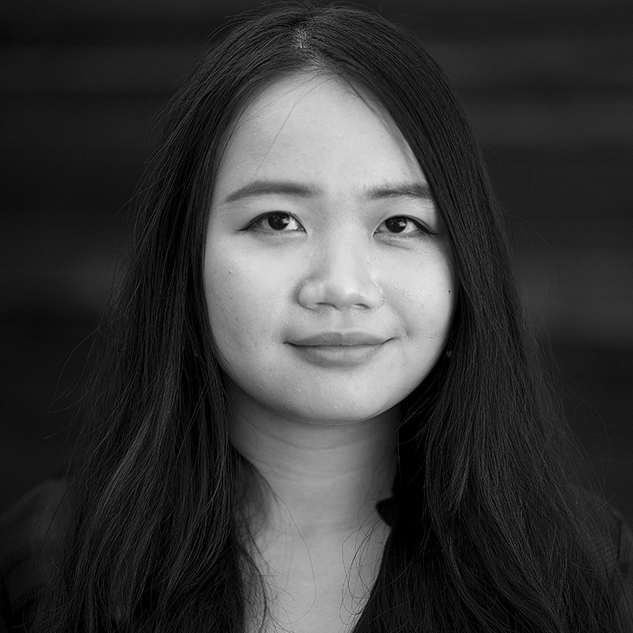

Simon Campbell
Simon is a digital journalist specializing in data and narrative writing.
Project: Smoke and Mirrors
Twitter: @Si_Campbell_
Yutao Chen
Yutao is a visual journalist who shoots, edits and codes.
Project: Dirty Business
Twitter: @yutao_chen95

Yingshan Deng
Yingshan is a multimedia reporter focusing on business and science.
Project: New Path
Twitter: @SereneSerenaD
Sarah El Safty
Sarah is a multimedia journalist with experience covering business across several markets in the US and the Middle East.
Project: Stolen
Twitter: @SarahSafty
Francesca Fenzi
Francesca Fenzi is an audio producer, writer, and educator. She enjoys reporting stories from the intersection of science and society.
Project: Dirty Business
Twitter: @francesca_fenzi

Saemmool Lee
Saemmool is a multimedia reporter from South Korea, focusing on business and technology.
Project: New Path
Twitter: @saemmool
Cecilia Lei
Cecilia is a multimedia journalist focused on enterprise reporting, with a concentration in criminal justice and immigration.
Project: Pennies Per Hour
Twitter: @ceelei

Susie Neilson
Susie is a science reporter specializing in data, audio and public records.
Project: On the Line
Twitter: @susieneilson
Mallory Newman
Mallory is a multimedia reporter focused on video and investigative journalism.
Project: Uneven Ground
Twitter: @manewms
Alex Nieves
Alex is a multimedia journalist focusing on politics and environment reporting.
Project: Second Class
Twitter: @alexdrnieves

Josh Slowiczek
Josh is a Bay Area reporter focusing on multimedia, data and investigative journalism.
Project: Stolen
Twitter: @JSlowiczek
Anne Wernikoff
Anne is a multimedia journalist and documentary photographer. Her work focuses on sense of place, family and community.
Project: Smoke and Mirrors
Twitter: @awernikoff
Instructors: Richard Koci Hernandez, Jeremy Rue, John Temple and Lucio Villa.